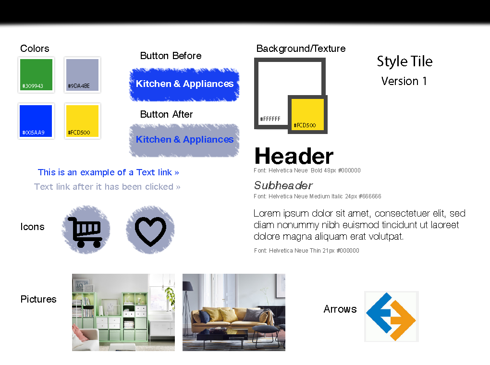
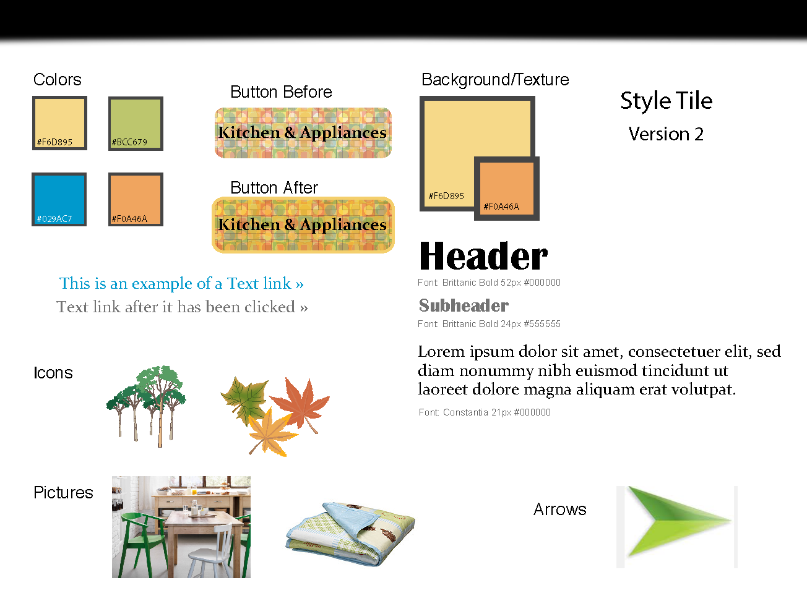
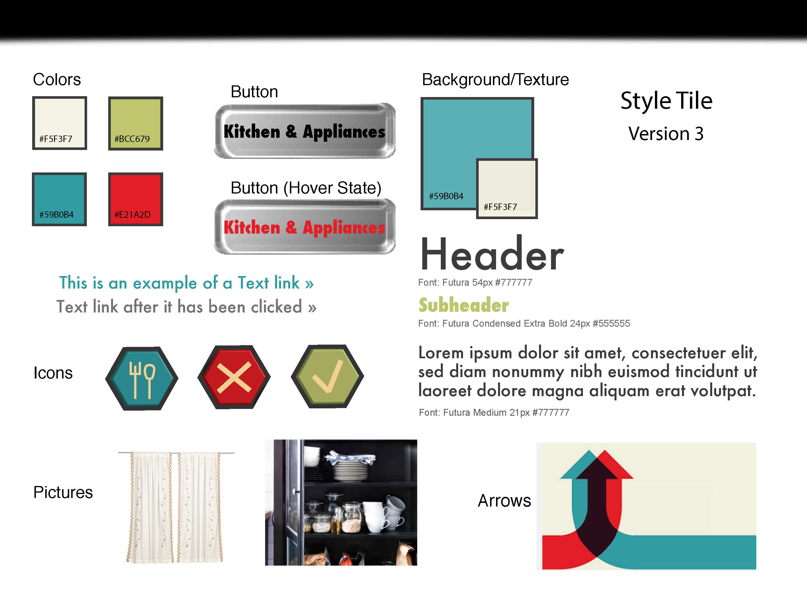
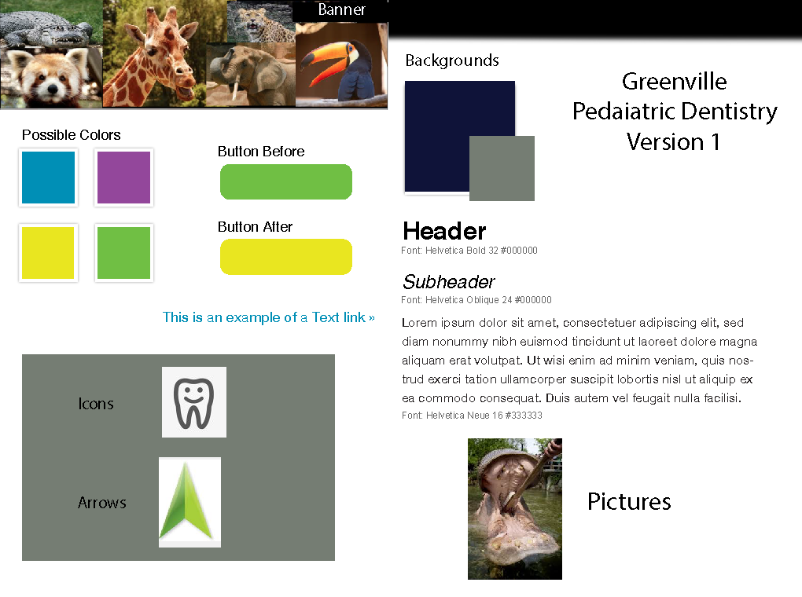
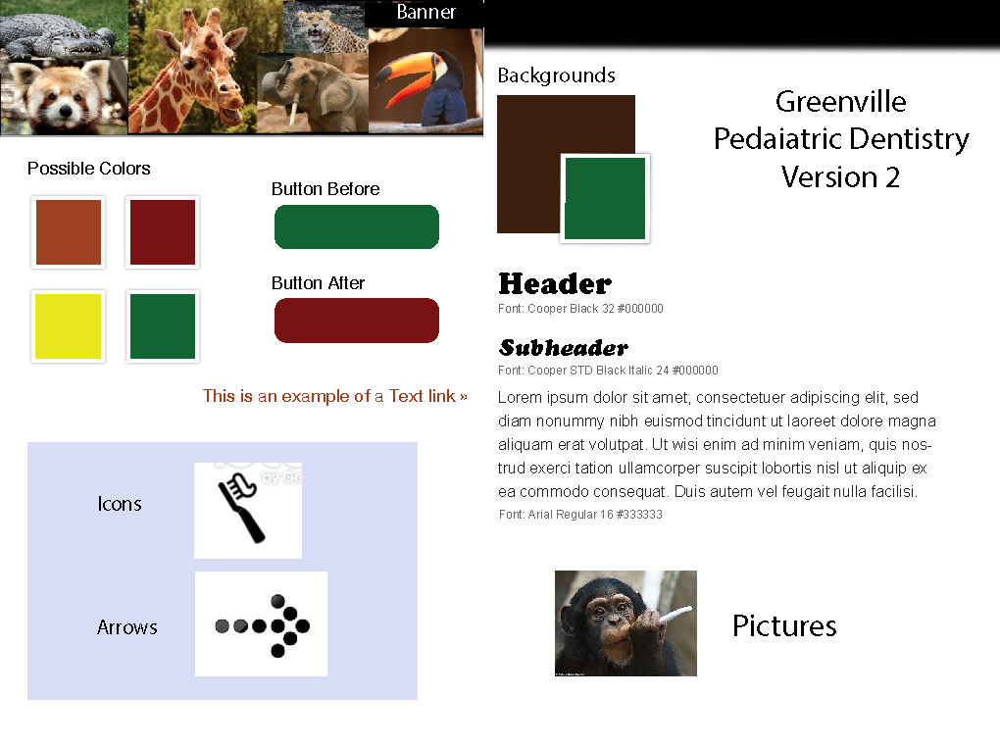
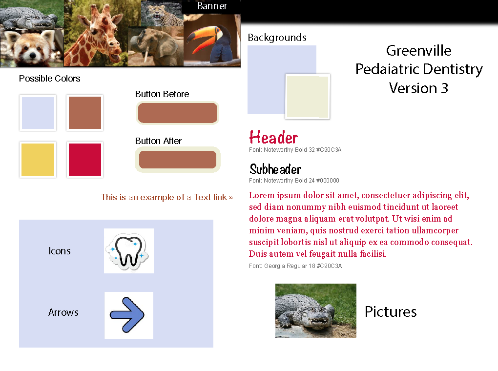

Iron Yard Final Project - IKEA Website Redesign



This is one of the steps in planning to design a website. Style Tiles are great for showing a client the color palette, typography, and imagery that will be used in the site. When you pair a style tile with a wire frame you can almost see what the final website might look like.
These images are a snapshot of the style tiles that most closely resemble the decisions I made regarding the Greenville Pediatric Dentistry site. In these style tiles you can see the color palletes that I chose and how the colors were planned to layer on top of each other.
Link to GitHub: http://mckatie1110.github.io/Greenville-Pediatric-Dentistry/